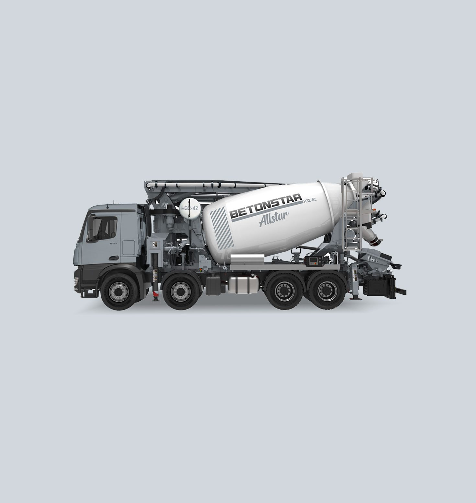
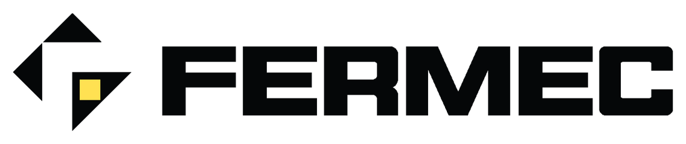

Markalarımız
İki marka, iki uzmanlık alanı. Her biri kendi segmentinde ürün, satış ve satış sonrası hizmetin tamamından sorumlu; üretim disiplinini ise ortak kalite sisteminden alır.
Beton pompaları ve
beton iletim teknolojileri
2008'den bu yana İzmir Torbalı'daki 70.000 m² üretim tesisinde kamyona monte beton pompaları, mikserli pompalar ve kamyona monte hat pompaları üretiyor. Ar-Ge Tasarım Merkezi'nde geliştirilen hidrolik ve kontrol sistemleri, yüksek basma kapasitesi ve uzun erişim mesafesi sağlıyor.
Üretiminin yaklaşık tamamını ihraç eden Betonstar; ABD, Almanya, Fransa, Polonya, İspanya ve Belçika'nın da aralarında bulunduğu 50'den fazla ülkede bayi ve servis ağıyla faaliyet gösteriyor.
- Kamyona Monte Bomlu Pompalar 4Z · 5Z · 5RZ · 7RZ
- Mikserli Pompalar Mikser + Pompa
- Kamyona Monte Hat Pompaları City Star

Teslimata hazır pompa programı ve Smartstar kontrol sistemiyle saha verimliliği.
Ürün KataloğuKamyona monte bomlu pompa · mikserli pompa

Kazıcı-yükleyici
iş makineleri
Zorlu şantiye ve altyapı projeleri için geliştirilen kazıcı-yükleyici (beko loder) serisi; güçlendirilmiş şasi mimarisi, yüksek hidrolik verim ve operatör konforunu aynı makinede birleştirir.
Teleskopik bom seçenekleri ve hızlı servis desteğiyle geniş uygulama esnekliği sunar. Kazı, yükleme, taşıma ve tesviye işlerinin tamamı tek makineyle, dar alanlarda dahi verimli biçimde yürütülebilir.
- 4x4 Kazıcı-Yükleyiciler Standart Seri
- Teleskopik Bom Opsiyonel
- Yedek Parça & Servis Yetkili Ağ
Güçlendirilmiş şasi, panoramik kabin ve hızlı bakım erişimi.
Ağır HizmetKazıcı-yükleyici · saha uygulaması
İki markanın arkasındaki tek üretim gücü
Ar-Ge ve Tasarım
Hidrolik, elektronik otomasyon ve yapısal çelik mühendisliği kendi ekibimizde.
Entegre Üretim
Robotik kaynak, çelik işleme ve montaj aynı kampüste tek akışta ilerler.
Kalite ve Test
Her makine sevkiyat öncesi yük ve performans testinden geçer.
Servis Ağı
Orijinal yedek parça lojistiği ve saha servisiyle makine ömrü boyunca destek.
Doğru makineyi birlikte seçelim.
Uygulamanızı ve saha koşullarınızı paylaşın; ekibimiz en uygun modeli ve konfigürasyonu önersin.